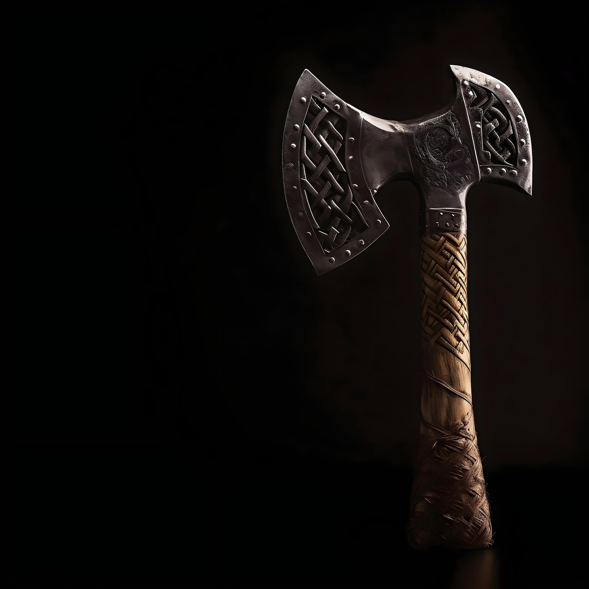
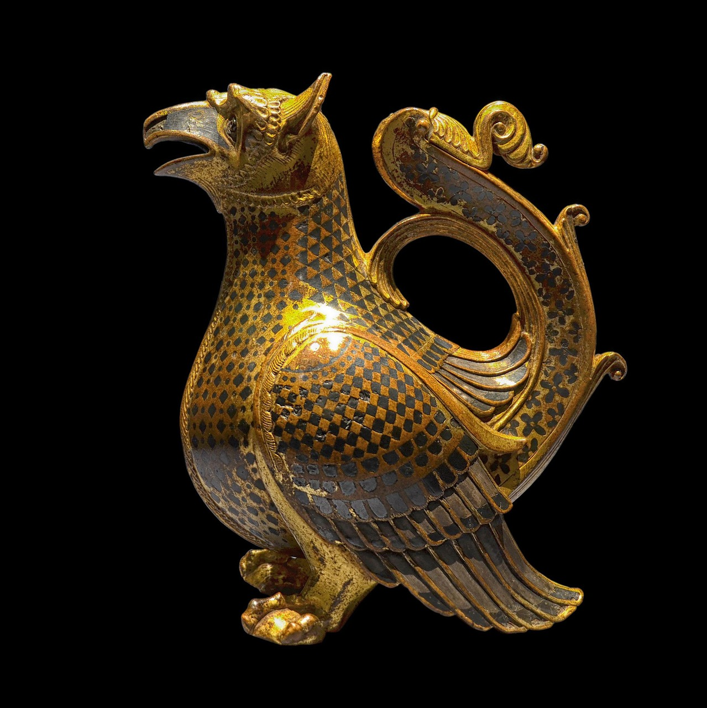

Ancient Slab

Description
A tall, two-handled ceramic vessel decorated with geometric patterns typical of early Greek pottery. Amphorae like this were widely used for storage and transport in ancient Greece.
Metadata
- Date: c. 750 BCE
- Place: Athens, Greece
- Culture: Ancient Greek
- Medium: Terracotta, slip-painted
- Dimensions: 45 cm × 25 cm
- Credit Line: Gift of the Classical Antiquities Society
- Accession Number: 2023.14.01
Use & Function
Amphorae were used to store and transport goods such as wine, olive oil, and grains. Their tall shape and sturdy handles made them easy to carry and stack.
Cultural Context
This amphora reflects the rise of geometric art in early Greek society. The patterns symbolize order and structure, values central to Greek identity during the Geometric Period.
Viking Iron Seax
Description
A single-edged iron blade with a wooden handle, commonly carried by Norse warriors and craftspeople. The seax served as both a tool and a weapon.
Metadata
- Date: 9th century CE
- Place: Scandinavia
- Culture: Viking / Norse
- Medium: Iron blade, carved wood handle
- Dimensions: 32 cm
- Credit Line: Archaeological Recovery Program
- Accession Number: 2023.22.04
Use & Function
The seax was a multipurpose tool used for cutting, carving, and daily tasks. It also served as a weapon for self-defense and combat, reflecting the practical and martial aspects of Norse life.
Cultural Context
The seax was so iconic that some tribes were named after it, such as the Saxons. It symbolized self-reliance, craftsmanship, and personal identity in Norse culture.
Roman Bronze Oil Lamp
Description
A small bronze lamp designed to hold oil and a wick, featuring a simple loop handle and circular body. These lamps were common household items in the Roman Empire.
Metadata
- Date: 2nd century CE
- Place: Rome, Italy
- Culture: Roman Empire
- Medium: Cast bronze
- Dimensions: 12 cm
- Credit Line: Classical Studies Department Collection
- Accession Number: 2023.52.11
Use & Function
The bronze lamp was used for lighting homes and public spaces in ancient Rome. It was a common household item, often placed on tables or in corners of rooms.
Cultural Context
Lighting played a symbolic role in Roman domestic religion. Lamps were often left as offerings in temples or used during festivals and rituals.